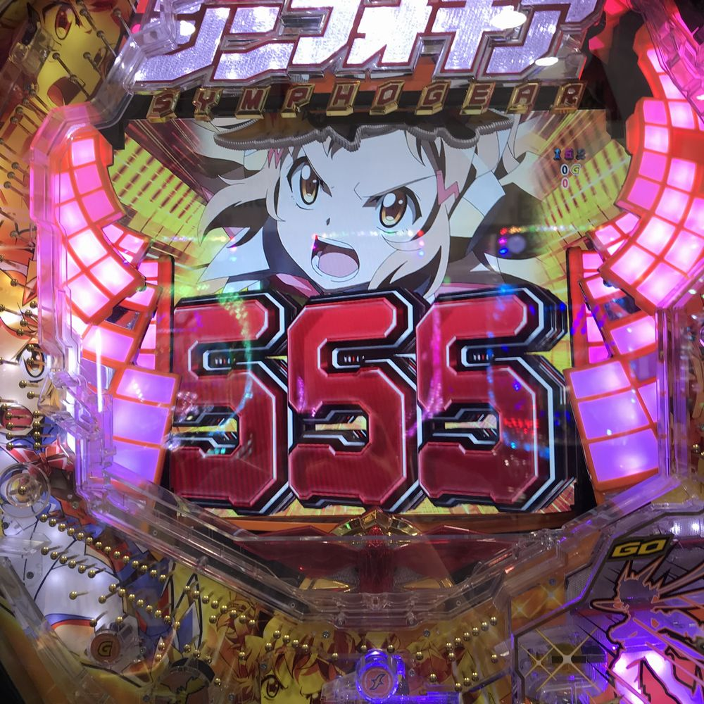
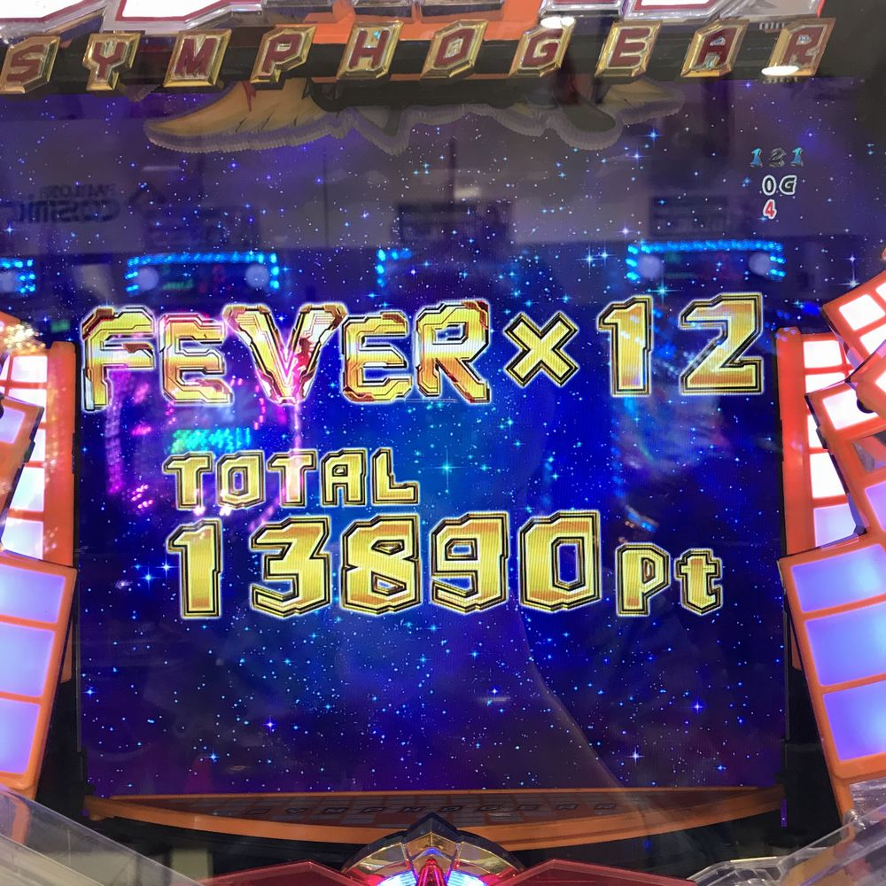
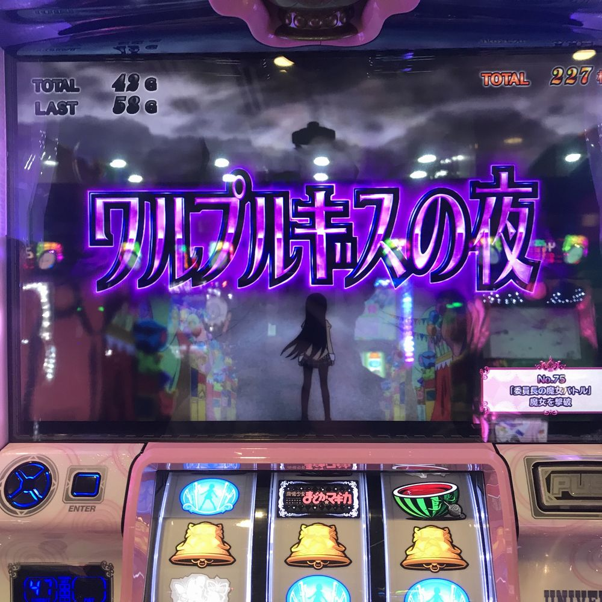

月曜は3限終わりなのでいつものようにパチ屋へ直行。
シンフォギアで263G回すも初当たり引けず…釘もあんまし良くなかったので撤退。
その後、Aスロ偽物語を打ってみると20Gほどでボーナス期待度66%の強怪異リプレイに当選！！
発展先は・・・

真・解呪ノ儀
真・解呪ノ儀は突入時点でボーナス濃厚！（BIG確定ではない）
白同色BIGに当選し312枚獲得！
さらに倖時間中の怪異リプレイから異色BIG当選で208枚獲得！！
投資100枚からボーナス2連で合計で560枚獲得＾＾
シンフォギアの負けを抑えらせたんでヨシ！
☆本日の結果☆
投資・・・３．５ｋ
回収・・・２．５ｋ
収支・・・－１ｋ
1限終わってパチ屋へ。

投資700発で初当たりGET！最終決戦突破できなかったので隣の台へ
26回転目で先読みレバブル発生！纏う予告成功→絶唱ゾーン+70億の絶唱リーチで本日2回目の初当たり！
最終決戦は白文字翼さんで突破＾＾；
SC中いつもなら普通にハズレてる演出でも謎当たりして12連唱！
今日はめちゃめちゃ振り分け良くて12連中7回15R引けた！

祝☆万発
☆本日の結果☆
投資・・・０．６ｋ
回収・・・１１ｋ
収支・・・＋１０．４ｋ

ブログはじめました。